Este relatório tem como objetivo estudar e descrever as metodologias de detecção e rastreamento de pontos de interesse são fundamentais em várias aplicações de visão computacional e processamento de imagens. Entre as abordagens mais notáveis estão o "Harris Corner Detection", que identifica cantos em uma imagem com base na variação da intensidade local, e o "Shi-Tomasi Corner Detector & Good Features to Track", que aprimora o Harris ao considerar a qualidade dos pontos identificados. Além disso, temos o "Scale-Invariant Feature Transform (SIFT)", uma técnica poderosa que extrai pontos de interesse invariantes à escala e rotação, sendo amplamente utilizado em tarefas como correspondência de imagens e reconstrução 3D. Cada uma dessas metodologias desempenha um papel importante no avanço da análise de imagens e reconhecimento de padrões.
Metodologia
Utilizar o OpenCV com a webcam disponibilizada em sala. Os metodos de processamento utilizados foram:.
Harris Corner Detection
Shi-Tomasi Corner Detector & Good Features to Track
Scale-Invariant Feature Transform - SIFT
Parte 1 - Testando as Features de detecção
Para a parte 1 foram utilizadas imagens prévias para realizar a validação dos métodos de detecção - além de imagens "aleatórias" para validar outros aspectos dos métodos.
Para conseguir comparar os métodos usamos dois tipos de imagens - reta e com cores fortes
Imagens Cesar - Referência reta
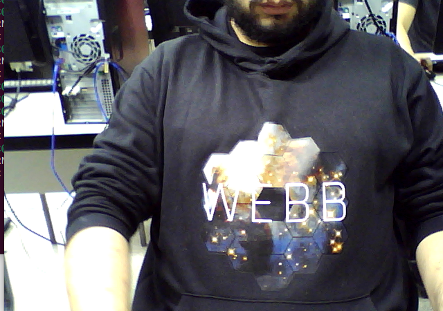
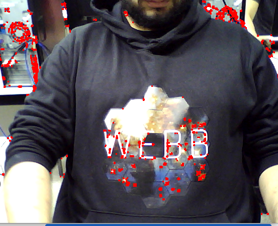
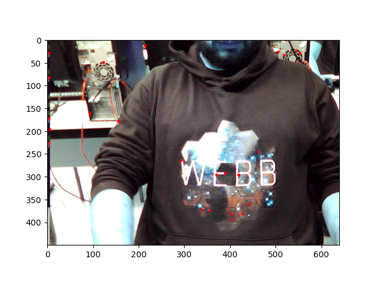
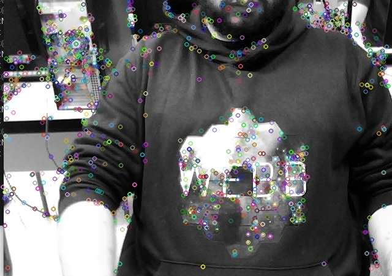
Imagens Cesar - Referência "Linha aleatória"
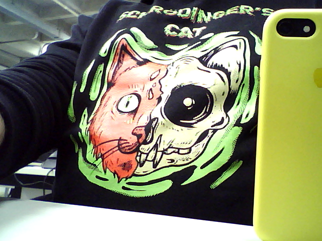
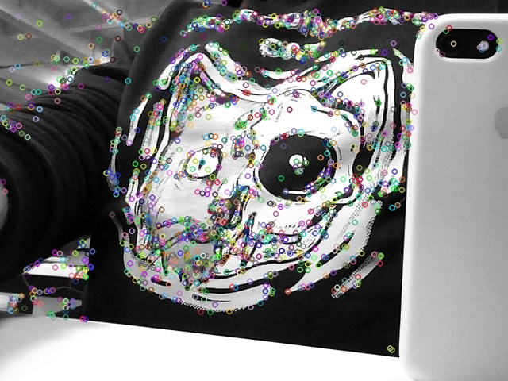
Descrição - Da esquerda para direita:
Imagem Normal
Harris Corner Detection
Shi-Tomasi Corner Detector & Good Features to Track
Scale-Invariant Feature Transform - SIFT
Imagens Selecionadas Gabriel - Floresta(Poucas cores e linhas aleatórias)
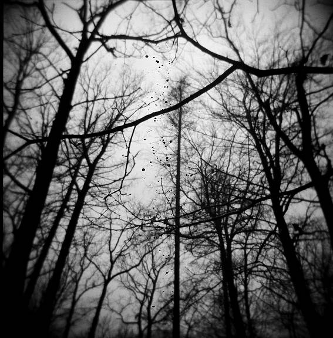
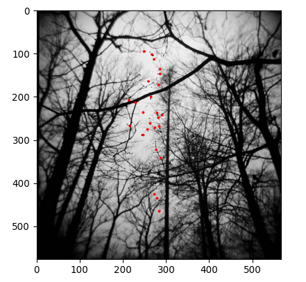
Descrição - Da esquerda para direita:
Harris Corner Detection
Shi-Tomasi Corner Detector & Good Features to Track
Imagens Selecionadas Gabriel - Tabuleiro(Poucas cores e linhas retas)
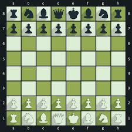
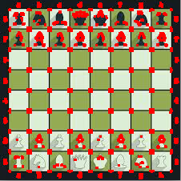
Descrição - Da esquerda para direita:
Harris Corner Detection
Shi-Tomasi Corner Detector & Good Features to Track
Imagens Selecionadas Gabriel - Quadro Van Gogh(Muitas cores e poucas formas)
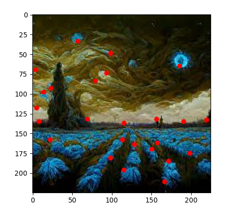
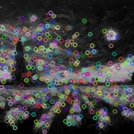
Descrição - Da esquerda para direita:
Harris Corner Detection
Shi-Tomasi Corner Detector & Good Features to Track
Conclusões - Parte 1
O método Harris-Corner se mostrou bastante eficiente quando lidando com cores que não apresentavam diferenças muito discrepantes. Apesar disso, é importante ressaltar que, mesmo sendo o mais eficaz entre os métodos testados, os resultados ainda não atingiram um patamar considerado excelente. Isso significa que há espaço para melhorias e desenvolvimento de novas abordagens para lidar com imagens com essas características específicas.
Um ponto interessante a se destacar é que, embora o Harris-Corner tenha obtido sucesso em situações onde a diferença de cores não era muito acentuada, ele enfrentou dificuldades ao lidar com imagens mais complexas, especialmente aquelas que não possuíam muitas linhas retas ou estruturas geométricas bem definidas. Esse aspecto ressalta a importância de buscar soluções mais abrangentes que possam capturar nuances em imagens com maior riqueza de detalhes e complexidade.
Nesse contexto, a busca por técnicas mais avançadas e robustas para o processamento de imagens e a visão computacional se torna uma tarefa crucial. É fundamental investir em pesquisa e inovação para encontrar abordagens que sejam capazes de lidar eficientemente com esses desafios. A exploração de algoritmos de aprendizado de máquina e redes neurais convolucionais pode ser uma direção promissora, pois eles têm demonstrado capacidade de extrair informações significativas de imagens complexas.
Outro fator relevante é considerar a utilização de informações contextuais e técnicas de segmentação de imagem para auxiliar no processo de identificação e localização de pontos de interesse em imagens menos "lineares". Essa abordagem pode ajudar a melhorar a precisão e a capacidade de generalização dos métodos, permitindo que eles sejam mais robustos diante de diversas situações.
Em resumo, embora o método Harris-Corner tenha sido o que apresentou melhores resultados para cores pouco discrepantes, ainda há um longo caminho a percorrer para enfrentar os desafios impostos por imagens complexas e não tão "lineares". O progresso nesse campo exigirá uma abordagem multidisciplinar, com contribuições da matemática, processamento de sinais, inteligência artificial e outras áreas relacionadas, com o objetivo de aprimorar a capacidade dos sistemas de visão computacional em lidar com a diversidade e complexidade do mundo visual.
Parte 2 - Replicando os features de detecção em video
Para a parte 2 foram utilizadas videos em tempo real para aplicar os métodos de detecção.
Videos Cesar
Video 1
Video 2
Video 3
Videos Gabriel
Video 1
Video 2
Video 3
Conclusões - Parte 2
Na detecção de imagens em vídeos, o método Harris-Corner mostrou-se eficiente quando lidando com cores pouco discrepantes. No entanto, é importante ressaltar que os resultados obtidos não foram considerados excelentes, evidenciando a necessidade de aprimorar as abordagens nesse contexto específico. Esse cenário é especialmente desafiador para imagens de vídeo, pois o fluxo contínuo de frames requer métodos capazes de processar informações em tempo real.
O Harris-Corner enfrentou dificuldades ao lidar com vídeos contendo imagens menos "lineares" ou com menos estruturas geométricas bem definidas. Essa limitação pode impactar a precisão e robustez do sistema em situações onde a presença de retas e formas é menos evidente. Por isso, a busca por técnicas mais avançadas, como algoritmos de aprendizado de máquina e redes neurais convolucionais, pode ser uma estratégia promissora para lidar com a complexidade e a dinamicidade dos vídeos.
Além disso, é fundamental considerar a utilização de informações contextuais e técnicas de segmentação de imagem para aprimorar a detecção em vídeos. Essa abordagem pode permitir uma melhor identificação e localização de pontos de interesse, tornando o método mais eficaz diante de sequências de imagens. A pesquisa e inovação contínua serão essenciais para enfrentar esses desafios e avançar no campo da detecção de imagens em vídeos, possibilitando aplicações em tempo real e com alto grau de precisão.
Conclusões do Relatório
Em conclusão, ao explorar técnicas de detecção de vídeo e imagem, fica evidente que nenhum método apresentou resultados excelentes para cores pouco discrepantes ou imagens menos "lineares". A detecção em vídeos requer abordagens capazes de lidar com a dinamicidade e fluxo contínuo de frames, enquanto a detecção em imagens demanda soluções mais robustas para lidar com nuances complexas.
Nesse contexto, o método Harris-Corner destacou-se como eficiente para cores pouco discrepantes, mas ainda enfrentou dificuldades em situações mais desafiadoras. A busca por soluções mais avançadas, como algoritmos de aprendizado de máquina e técnicas de segmentação de imagem, emerge como uma promissora direção para aprimorar a precisão e eficácia nesses dois cenários.
A investigação contínua e o desenvolvimento de abordagens mais sofisticadas e multidisciplinares são fundamentais para alcançar avanços significativos na detecção de vídeo e imagem, impulsionando aplicações em tempo real e melhorando a compreensão e interação com o mundo visual.

 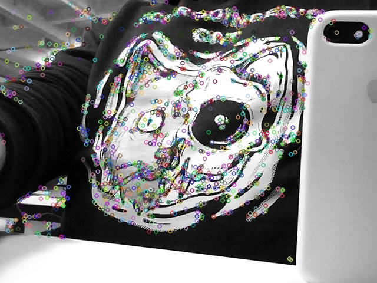
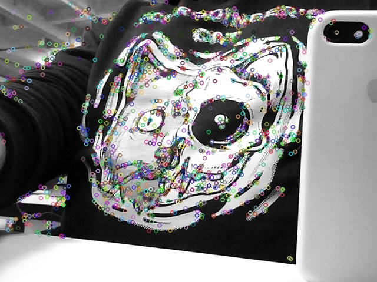
 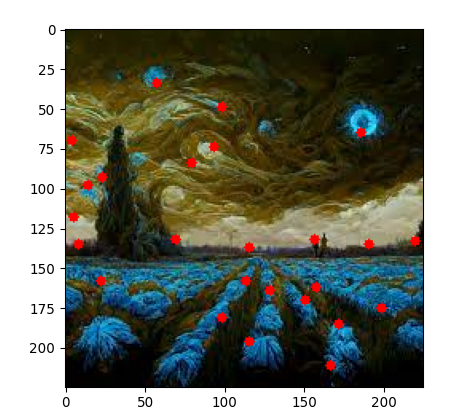
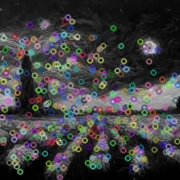
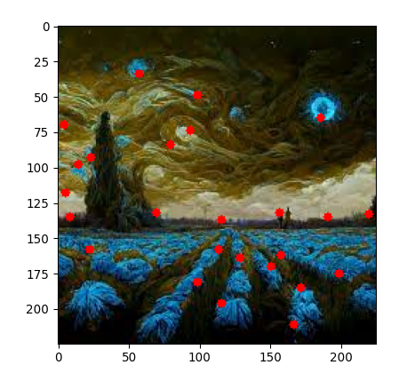
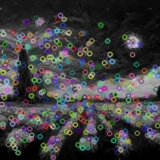